医药流通行业经营分析与对标研究
2026 · 5 家 A 股医药流通上市公司 · 2020–2025行业进入低增速阶段，需要判断增长质量、以及公司间差异来自哪里。
- 30 条财务记录 + 143 条分部记录，跨源校验定位 1 处追溯调整差异
- 四维指标体系 + SQL 八类查询，覆盖趋势 / 结构 / 对标 / 归因
- 相关系数 0.872 验证“业务结构决定毛利率天花板”
SQL · Excel · Python查看详情 →
2025–2026 · 5 家 A 股医药流通上市公司 · 2020–2025
医药流通行业进入低增速阶段。项目要回答两个问题：行业增长的质量如何？公司之间的差异到底来自哪里？

 样本合计营业收入（亿元）样本增速 vs 行业增速（%）
样本合计营业收入（亿元）样本增速 vs 行业增速（%）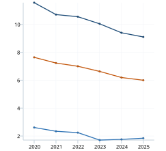
毛利率 / 净利率 / 三费率（%）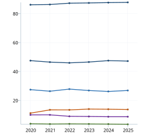
各公司收入份额与 CR3（%）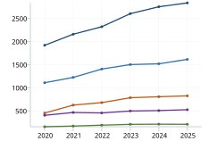
各公司营业收入趋势（亿元）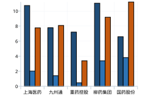
2025 盈利能力对标（%）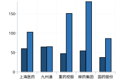
2025 营运效率对标（天）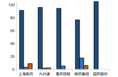
2025 业务结构（占收入 %）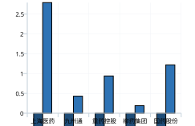
净利率变化归因（百分点）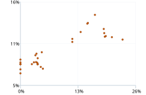
高毛利业务占比 vs 整体毛利率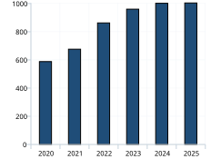
样本合计营业收入（亿元） 样本增速走势（%）
样本增速走势（%）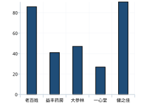
商誉占净资产比重（%）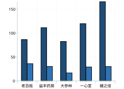
营运资金占用天数（天）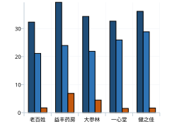
毛利率 / 销售费用率 / 净利率（%）